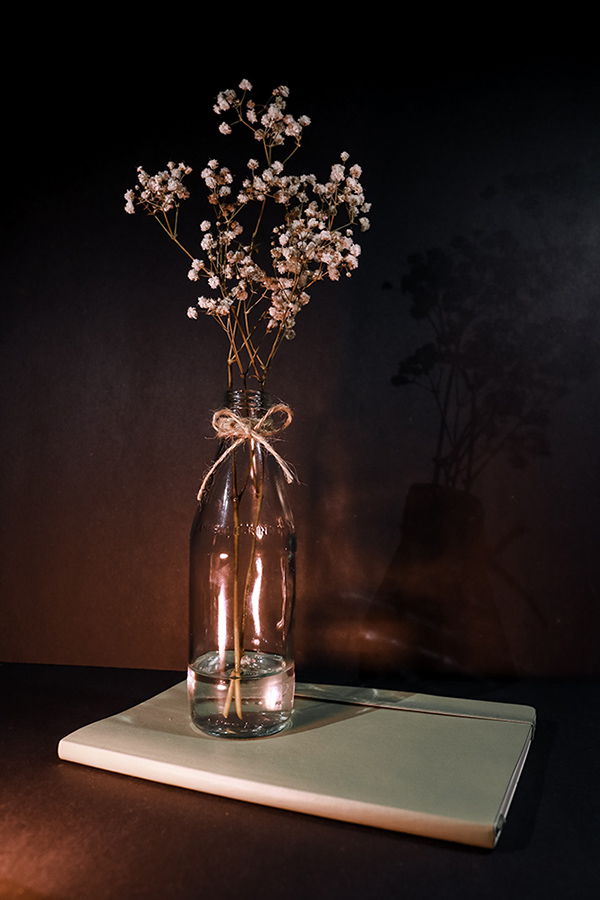
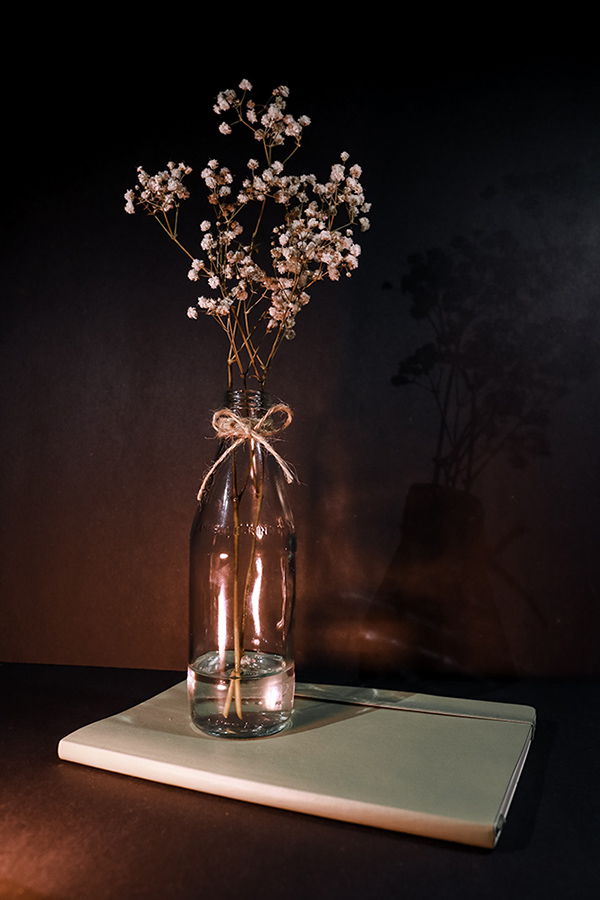

Ryan Hoskins
Graphic Design & Web Development
Hi! My name is Ryan Hoskins and I'm an amateur graphic designer and web developer! About two years ago I started learning Graphic Design and expanded into web development shortly afterwards. My endeavors have led me to a growing understanding of design and various software tools to execute my vision.
As my understanding of design and its relationship with web development grow, I aim to include my experience with graphic design. As an amateur photographer and passionate user of the Adobe lineup, I enjoy all steps of the process. Whether that be branding, logo design, webpage layout, or enhancing user experience on a site, it's a process I love.
Learn More
Photography
Three years of experience in photography with a focus on product and street photography
Adobe
Experience with the Adobe Lineup with a focus on Adobe Illustrator and Adobe InDesign

Web Design
Amateur web design with experience in optimizing UI/UX and utilizing Adobe XD
Photography
 
